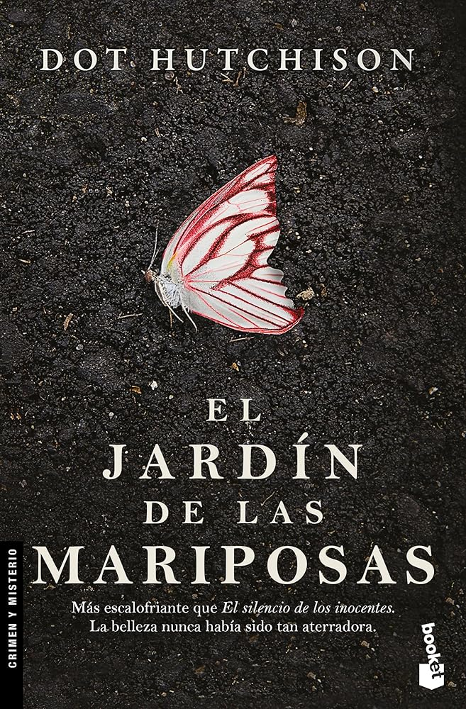

La república
Autor: Platón
Resumen: Un diálogo filosófico que trata sobre la justicia, el orden político y la naturaleza humana.

Soy un estudiante universitario de Ingeniería de Software.Me considero una persona proactiva y responsable, capaz de cumplir efectivamente con todos los desafíos que se me presenten. Me apasiona en particular el manejo y diseño de las bases de datos. Disfruto mucho del modelado de esquemas eficientes y planeo especializarme en esta clase de entornos.
También me considero una persona bastante locuaz y he de mencionar que en mis momentos de ocio, me dedico con gusto a la refinada actividad de degustar y evaluar diferentes variedades de agua, convirtiéndome en un degustador aficionado.

Autor: Platón
Resumen: Un diálogo filosófico que trata sobre la justicia, el orden político y la naturaleza humana.
Autor: Dante Alighieri
Resumen: Una obra épica que describe el viaje por el infierno, purgatorio y paraíso.

Autor: Dot Hutchison
Resumen: Un thriller psicológico sobre un jardín macabro y sus secretos.
Autor: Vegetta777 y Willyrex
Resumen: Una aventura fantástica en un mundo lleno de magia y criaturas.
Autor: Veronica Roth
Resumen: La tercera entrega de la saga Divergente, centrada en la verdad del sistema de facciones.

Director: Christopher Nolan
Protagonistas: Cillian Murphy, Robert Downey Jr., Emily Blunt
Director: Brian De Palma
Protagonistas: Al Pacino, Michelle Pfeiffer
Director: Ridley Scott
Protagonistas: Denzel Washington, Russell Crowe
| Nombre de la Canción | Género | Cantante | Nombre del álbum | Año de lanzamiento |
|---|---|---|---|---|
| Timeless | Trap/R&B | The Weeknd/Playboi Carti | Hurry Up Tomorrow | 2024 |
| Enchanted Waterfall | Synth-pop / Pop ochentero | Tory Lanez | Alone at Prom | 2021 |
| The Color Violet | R&B alternativo / Synthwave / Trap soul | Tory Lanez | Alone at Prom | 2021 |